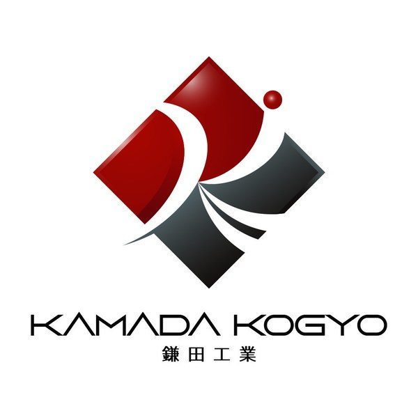
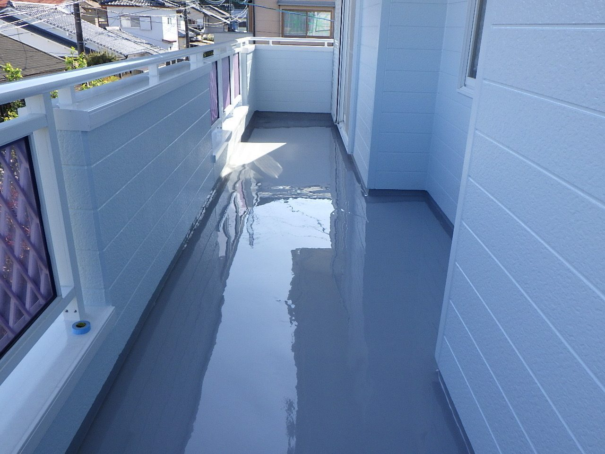
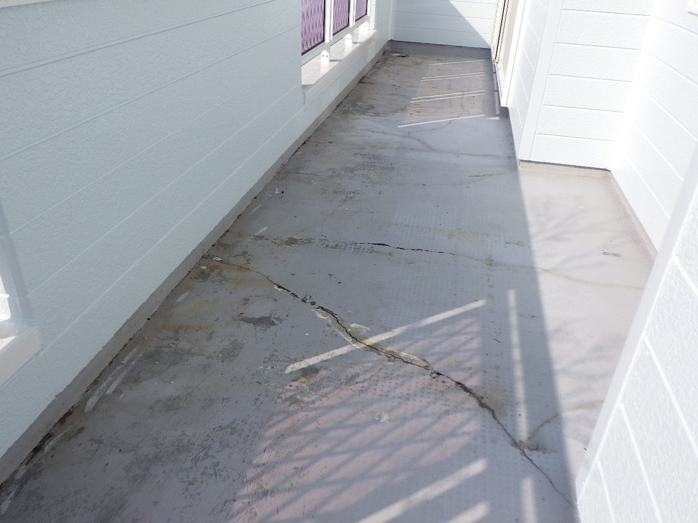

MESSAGE
ご挨拶
当社は土木・建築の補修工事を中心に、高品質な施工を提供しています。
小規模な住宅から大型施設まで幅広く対応し、確かな技術で信頼に応えます。老朽化や自然環境による損傷を早期に改善し、構造物の長寿命化と維持管理コストの低減に貢献してまいります。
鎌田工業 代表鎌田 貴大

SERVICE
事業内容
調査・診断から補修設計、施工まで。構造物の状態に合わせた最適な工法をご提案します。
CASE STUDY
施工事例 ― ビフォー・アフター
スライダーを左右に動かして、施工前と施工後を比較できます。


BEFORE AFTER← ドラッグして比較 →
WORKS
施工実績一覧へ
最近の施工実績
2026.05令和8年5月
山下印刷紙器 延岡工場
屋根塗装工事
2026.04令和8年4月
道路整備（交付金）工事（安城R7-1工区）
橋梁塗装工
2025.10令和7年10月
生目台中学校
外壁改修工事
2025.05令和7年5月
頴娃町群地区
水路目地補修工事
2025.03令和7年3月
遠見橋及び遠見跨線橋
剥落対策工事コンクリート補修工
募集職種
現場作業員
応募資格
未経験者歓迎
勤務時間
8:00〜17:00
工事のご相談・お見積りはお気軽に
構造物の劣化診断から補修・防水・塗装まで、まずは現状をお聞かせください。